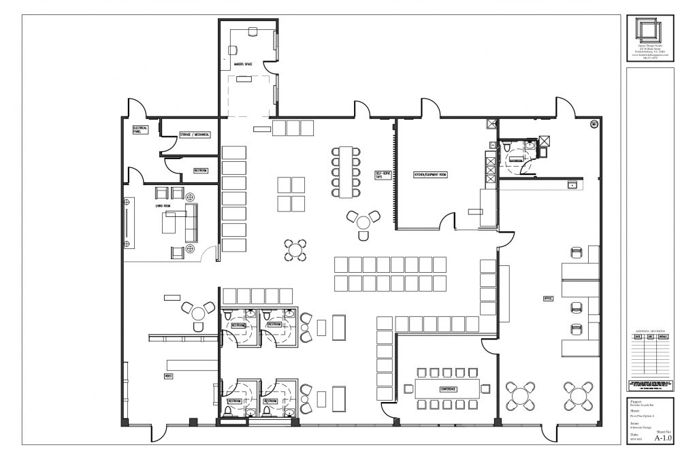
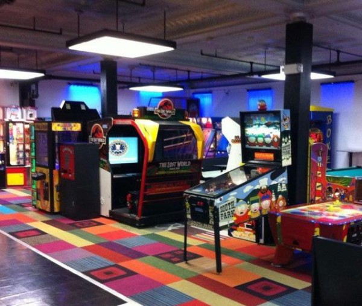
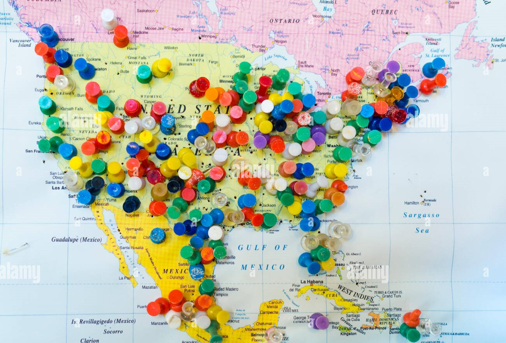

About Billy Mac's
Welcome to Billy Mac's, where burgers, fries, and arcade fun collide! Since our founding in 1998, Billy Mac's has been serving up delicious comfort food with a side of entertainment. Here's a glimpse into our journey.
🎉 Exclusive Token Discount Alert! 🎉
Are you ready to level up your arcade experience? We've got an exciting offer just for you!

Billy Mac's is offering an exclusive discount on tokens! Whether you're a seasoned pro or a casual player, now's your chance to enjoy more gaming for less.
Here's the deal:
Buy 20 Tokens, Get 5 Tokens FREE!
Enoy more rounds of Pac-Man, more epic battles in Street Fighter II, and more high-speed races in Mario Kart Arcade GP on us!
Head on over to Billy Mac's today to take advantage of this deal.
See you at Billy Mac's – where burgers, fries, and gaming fun collide!
Header
Founded in 1998 by childhood friends Billy Johnson and Mac Davis, both avid gamers and food enthusiasts, decided to turn their shared passion into a business. What started as a dream shared between friends has blossomed into a vibrant destination where families, friends, and gamers alike come together to indulge in delicious comfort food and nostalgia-inducing arcade games.
The Early Years
Billy Mac's started as a humble burger joint dreamed up by childhood friends Billy and Mac. With a shared passion for good food and arcade games, they set out to create a place where families and friends could come together for a memorable experience.
In the early years, Billy Mac's was a small, cozy diner tucked away in a quiet corner of town. Despite its modest size, word quickly spread about the mouthwatering burgers and crispy fries served at Billy Mac's. The arcade section, filled with classic and modern games, became a favorite hangout spot for local youths.
Expansion and Growth
As demand for Billy Mac's signature dishes grew, so did the business. With the success of their first location, Billy and Mac expanded, opening additional restaurants across the state. Each new location stayed true to the original concept: delicious food, arcade games, and a welcoming atmosphere.
About The Owners
Billy Johnson (pictured on the right)
Blah blah
In addition to his culinary skills, Billy is also an avid gamer and takes great pride in curating the arcade experience at Billy Mac's. From classic arcade cabinets to the latest gaming consoles, Billy is always on the lookout for new games to add to the collection, ensuring that there's something for everyone to enjoy.
Mac Davis (pictured on the left)
Mac Davis, co-founder of Billy Mac's, is the creative force behind the restaurant's unique atmosphere and branding. With a background in graphic design and a passion for all things retro, Mac brings his artistic vision to life through the restaurant's decor, signage, and marketing materials.
In addition to his design work, Mac also manages the day-to-day operations of Billy Mac's, ensuring that everything runs smoothly and that guests have a memorable experience from the moment they walk in the door. With his friendly demeanor and attention to detail, Mac is dedicated to providing top-notch service and creating a welcoming environment for guests of all ages.
Their Origin Story

Growing up together in the same neighborhood, Billy and Mac often spent their weekends hanging out at the local arcade and trying out different burger joints in town.
After years of dreaming and planning, they finally decided to take the leap and open their own burger and fries arcade restaurant. With their combined savings and a small business loan, they secured a cozy location in their hometown and set to work bringing their vision to life. From renovating the space to designing the menu and selecting arcade games, Billy and Mac poured their hearts into every detail, determined to create a place where people could come together to enjoy great food and have fun.
Despite facing challenges along the way, including long hours and tight budgets, Billy and Mac's dedication and passion never wavered. Their hard work paid off when Billy Mac's opened its doors to the public in 1998, quickly becoming a favorite hangout spot for locals of all ages.
Thank you for choosing Billy Mac's – where every bite is a taste of happiness and every game is a journey back in time. We can't wait to see you soon!